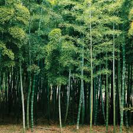

Bamboo
Bamboos are a diverse group of evergreen perennial flowering plants in the subfamily Bambusoideae of the grass family Poaceae. Giant bamboos are the largest members of the grass family. The origin of the word "bamboo" is uncertain, but it probably comes from the Dutch or Portuguese language, which originally borrowed it from Malay or Kannada.
In bamboo, as in other grasses, the internodal regions of the stem are usually hollow and the vascular bundles in the cross-section are scattered throughout the stem instead of in a cylindrical arrangement. The dicotyledonous woody xylem is also absent. The absence of secondary growth wood causes the stems of monocots, including the palms and large bamboos, to be columnar rather than tapering.
Bamboos include some of the fastest-growing plants in the world,due to a unique rhizome-dependent system. Certain species of
bamboo can grow 910 mm (36 in) within a 24-hour period, at a rate Bamboos include some of the fastest-growing plants in the world, due to a unique rhizome-dependent system. Certain species of bamboo can grow 910 mm (36 in) within a 24-hour period, at a rate of almost 40 mm (1+1⁄2 in) an hour (equivalent to 1 mm every 90 seconds).[6] This rapid growth and tolerance for marginal land, make bamboo a good candidate for afforestation, carbon sequestration and climate change mitigation
Bamboos are of notable economic and cultural significance in South Asia, Southeast Asia, and East Asia, being used for building materials, as a food source, and as a versatile raw product. Bamboo, like wood, is a natural composite material with a high strength-to-weight ratio useful for structures.[7] Bamboo's strength-to-weight ratio is similar to timber, and its strength is generally similar to a strong softwood or hardwood timber.
Systematics and Taxonomy
Bamboos have long been considered the most primitive grasses, mostly because of the presence of bracteate, indeterminate inflorescences, "pseudospikelets", and flowers with three lodicules, six stamens, and three stigmata.[11] Following more recent molecular phylogenetic research, many tribes and genera of grasses formerly included in the Bambusoideae are now classified in other subfamilies, e.g. the Anomochlooideae, the Puelioideae, and the Ehrhartoideae. The subfamily in its current sense belongs to the BOP clade of grasses, where it is sister to the Pooideae (bluegrasses and relatives).[10]